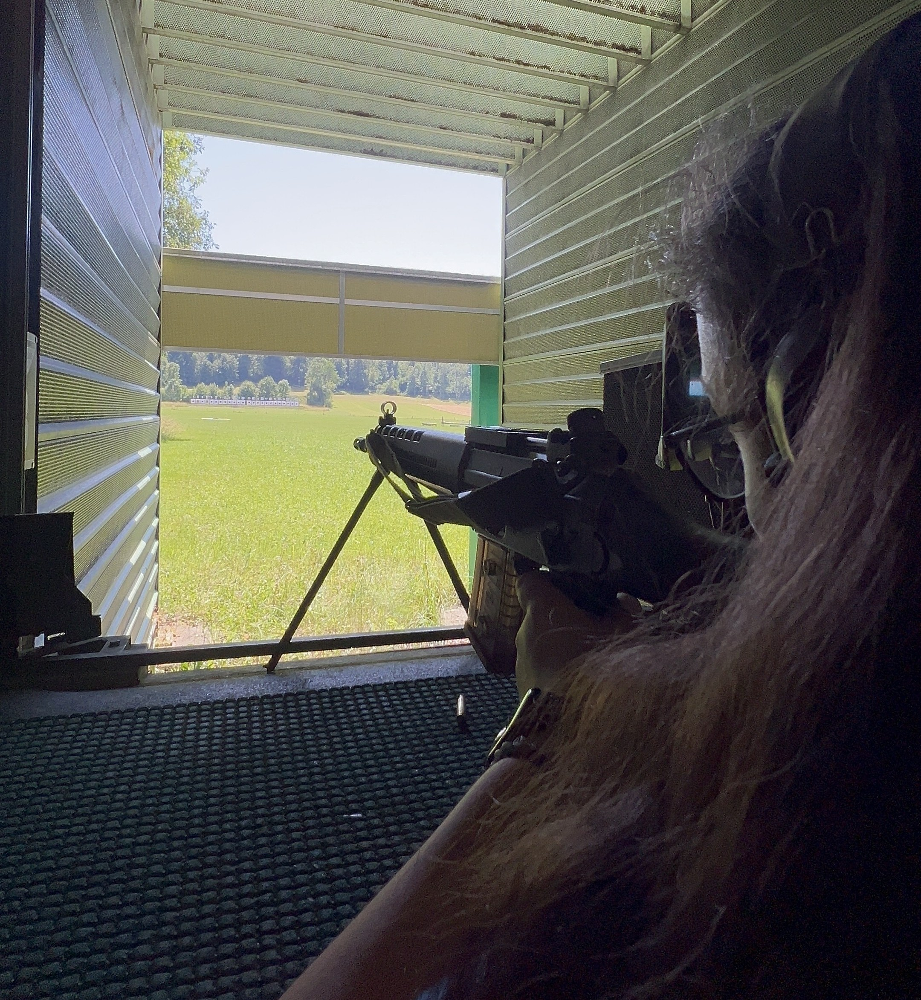

Fokus-Training

Projektbeschreibung
Im Sportschießen entscheidet häufig die mentale Stärke über Erfolg oder Misserfolg. Dieses Projekt konzentriert sich auf die Verbesserung der Konzentrationsfähigkeit, die Kontrolle von Ablenkungen und die Entwicklung einer stabilen Wettkampfmentalität.
Ziele
- Konzentration über längere Zeit aufrechterhalten
- Ablenkungen gezielt ausblenden
- Mentale Routinen für Training und Wettkampf entwickeln
- Stresssituationen besser bewältigen
Trainingsmethoden
- Atem- und Entspannungsübungen
- Visualisierung von Schussabläufen
- Konzentrationsspiele und Reaktionsübungen
- Analyse der mentalen Verfassung nach jedem Training
Ergebnis
Durch regelmäßiges Fokus-Training konnte die Konzentrationsfähigkeit deutlich verbessert werden. Dies führte zu mehr Konstanz, einer ruhigeren Schussabgabe und besseren Leistungen in Wettkämpfen.
← Zurück zu Projekten